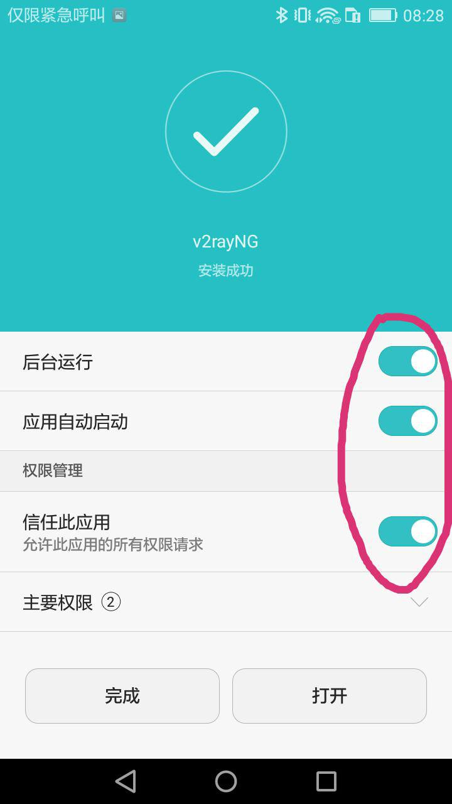
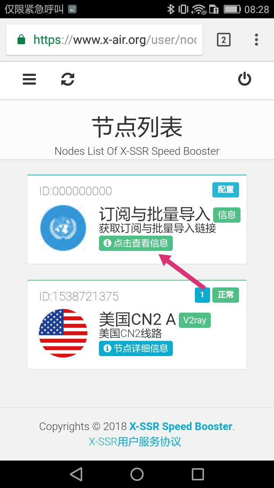
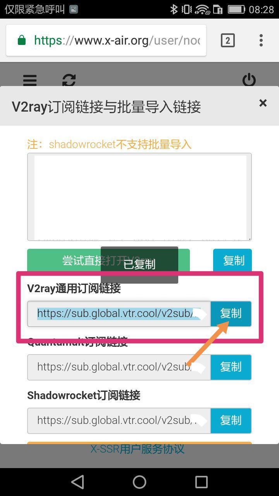
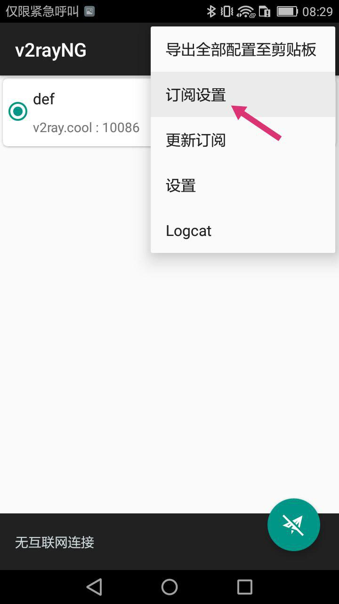
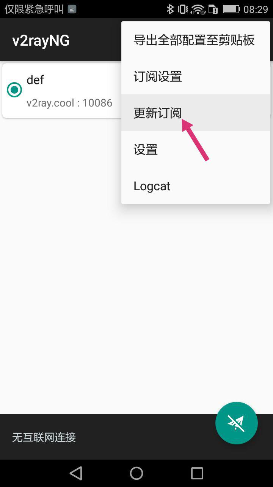
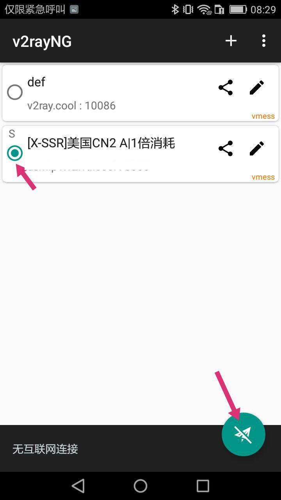
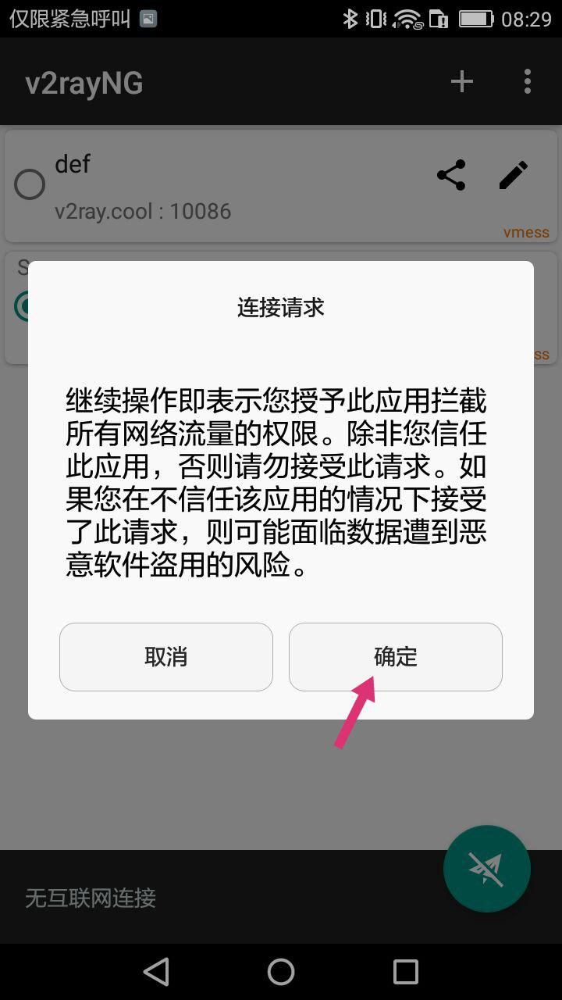

V2rayNG
简介
V2RayNG 是一个基于 V2Ray 内核的 Android 应用，它可以创建基于 VMess 的 VPN 连接。
Github:https://github.com/2dust/v2rayNG
使用
请先下载客户端，安装时请赋予后台运行和自启动的权限。

接下来请前往节点列表获取您的订阅链接。

请复制V2ray通用订阅链接

接下来请打开客户端，点击右上角的三个点，选择订阅设置。

接下来请如图操作，填入您的订阅链接。备注名可随意填写。
返回主界面，点击右上角的三个点，选择更新订阅。

稍等片刻您就可以看到您的所有可用的节点了。选择一个您想用的，然后点击右下角的圆圈开始连接。

如果您是第一次使用，那么可能会弹出一个警告，请点击确定。

连接上之后，您可以点一下下面的黑色栏目那里检查一下网络联通性，值得注意的是，他的延迟测试结果是假的，远远高出实际值，所以可以忽略掉，请以Speedtest等专业测试工具的结果为准。
正常来说，现在是可以正常使用本站的服务的了。